Recent Work &
Possible Contributions
dMetrics Inc. - Market Segmentation
- Demographic Segmentation
- Age
- Sex
- Education Level
- Occupation
- Behavioral Segmentation
- Psychographic Segmentation
- Leisure time
- Activities
- Interests
Adderall
Oxycontin
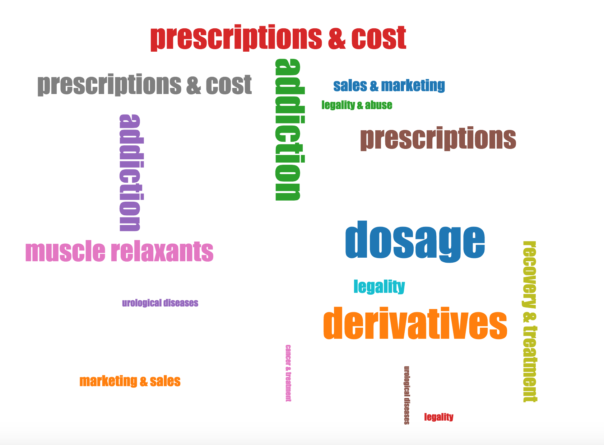
Adhd
Addiction
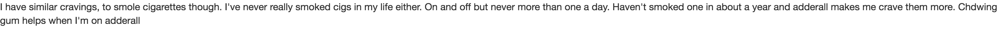Education
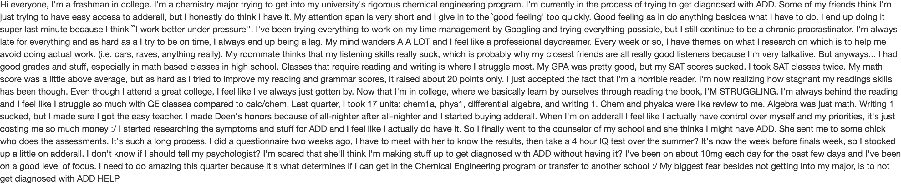Family
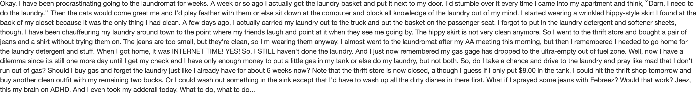CB Insights
News Classifier
- HR Classifier
- Partnership Classifier
- Financing News Classifier
- Trend Estimation of Time-Series Signals
- Prediction on various industries with Topic Models
Classification Accuracy
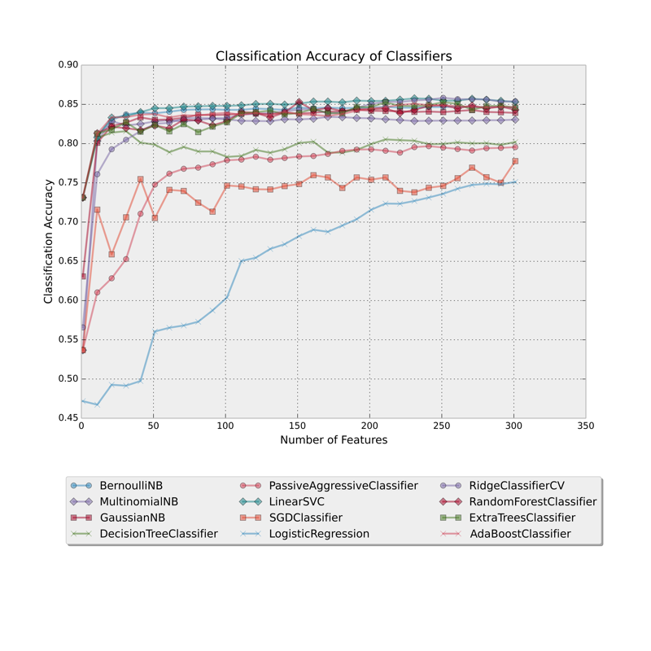Fbeta Score of the Classifier
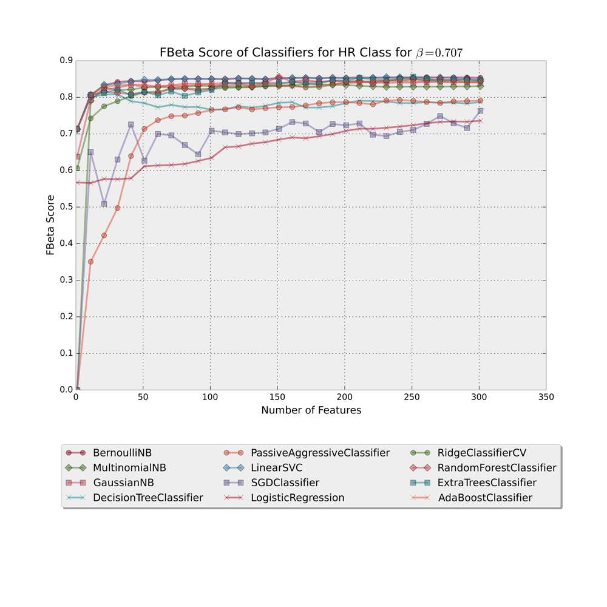Social Media
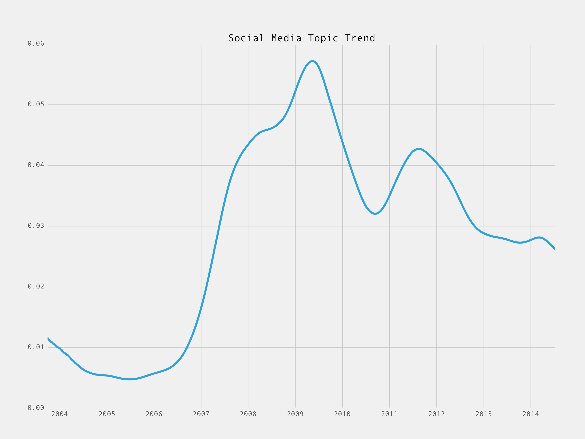Mobile Apps: mobile phone app android google iphone blackberry apple device web phones devices browser home ipad screen wifi windows data desktop experience voice ios laptop feature love nexus os
Ads - Business Models: ad advertising business online model free content media paid revenue service pay etsy money network sell market internet buy customers marketing run cost make networks company adsense tacoda
L1 Trend Filtered Signal with high regularizer
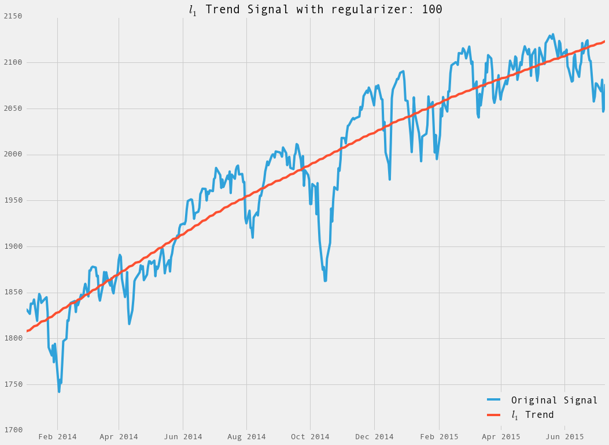L1 Trend Filtered Signal
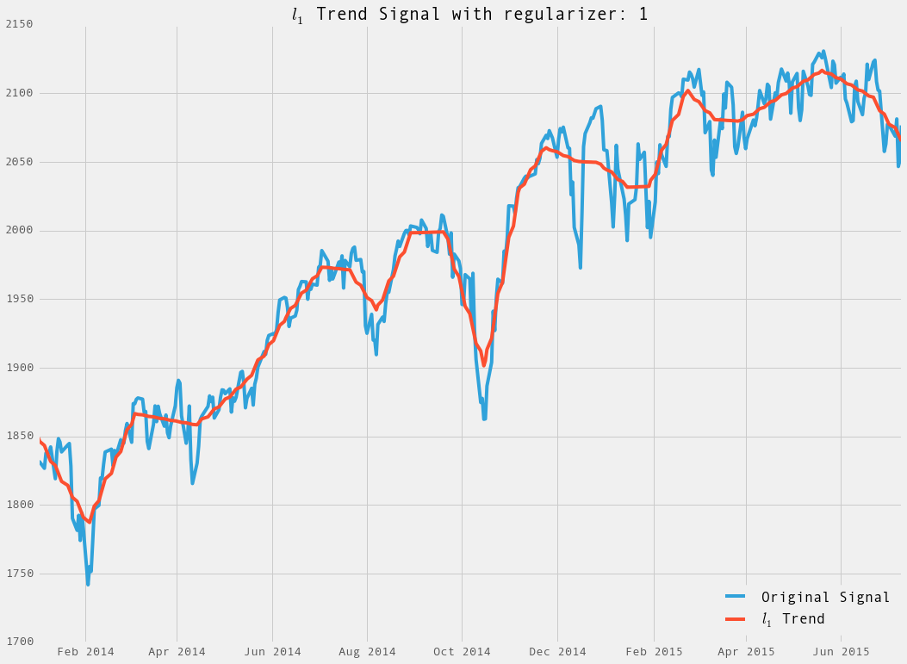Axial
- Search
- Recommender Systems
Industry Similarity
Without Ordering
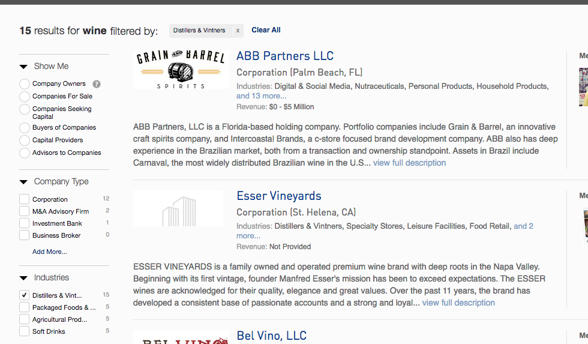With Ordering
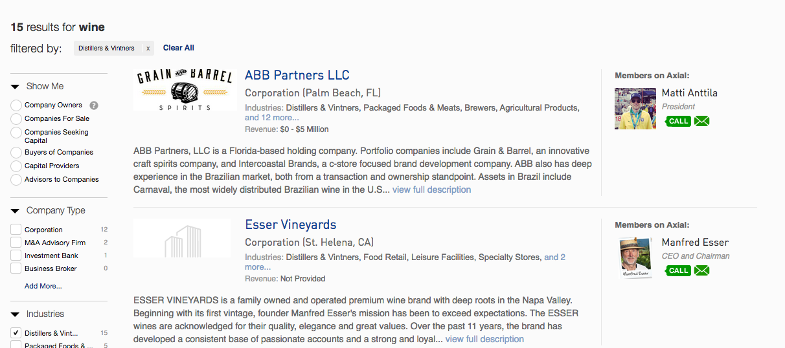Keyword Expansion and Typeahead
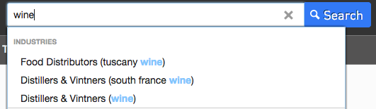

Hinge
- Recommender Systems
- Find everybody compatible with you (gender, orientation, age, location) -> Compatible People
- Keep people you are able to match with (not matched, not passed, etc.) -> Eligible People
- Get social paths; filter out friends and really distant matches
- Score all matches with machine learning model
- 15% of your batch is "aspirational" matches: people you will like
- The rest are high-scoring "best fit" matches: people you will like who will like you back

Possible Contributions
- Typeahead support
- Price range can be more transparent and adjusted more easily based on a price range
- Category and department sections can be much more granular and hierarchical
- Design could be improved and use some real estate in the screen that is not being used
- Search is slow and can be improved
- Rank based on reviews and ratings can be done
- Personalized recommendations based on the items that you added to your cart
- Explaratory search can be done much better
- Seasonal queries can be used to display different products within a category("mother's day")
- Seasonal queries can be used to group and categorize items in a different context("flowers" -> "mother's day", "chocalate" -> "Valentine's Day")
- More information can be provided in the search of products
- Show related products in the search even if the typed query is not exactly matching to the products